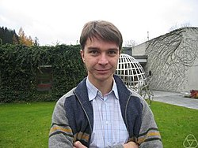

Stanislav Smirnov | |
|---|---|
| Станислав Смирнов | |
 Smirnov at Oberwolfach, 2007 | |
| Born | 3 September 1970 |
| Alma mater | Saint Petersburg State University California Institute of Technology |
| Awards | Clay Research Award (2001) Salem Prize (2001) Rollo Davidson Prize (2002) EMS Prize (2004) Fields Medal (2010) |
| Scientific career | |
| Fields | Mathematics |
| Institutions | University of Geneva Royal Institute of Technology Saint Petersburg State University Yale University Max Planck Institute for Mathematics IAS Princeton Skolkovo Institute of Science and Technology |
| Thesis | Spectral Analysis of Julia Sets (1996) |
| Nikolai Makarov | |
{kind=link}
Stanislav Konstantinovich Smirnov (Russian: Станисла́в Константи́нович Cмирно́в; born 3 September 1970) is a Russian mathematician currently working as a professor at the University of Geneva. He was awarded the Fields Medal in 2010. His research involves complex analysis, dynamical systems and probability theory.[1][2]
Career
Stanislav Smirnov graduated Saint Petersburg Lyceum 239, a highly selective high school, which is alma-mater for many well-known mathematicians. During his high-school years, he won two perfect scores in International Mathematical Olympiad 1986 and 1987. He received his undergraduate and master degree in mathematics from the Saint Petersburg State University, one of the top universities in Russia, in 1992. In 1996, he defended his Ph.D. thesis, Spectral Analysis of Julia Sets, at Caltech, with Nikolai Makarov as his primary thesis advisor.[3]
After spending time at Yale University and Princeton's Institute for Advanced Study as a postdoc, Smirnov joined the faculty of the Royal Institute of Technology in Stockholm in 1998. In 2003, he become a professor in the Analysis, Mathematical Physics and Probability group at the University of Geneva.[4][5]
In 2010, Smirnov became the founding director of the Chebyshev Laboratory in Saint Petersburg State University in Russia.
Research
Smirnov has worked on percolation theory, where he proved Cardy's formula for critical site percolation on the triangular lattice, and deduced conformal invariance.[6] The conjecture was proved in the special case of site percolation on the triangular lattice.[7] Smirnov's theorem has led to a fairly complete theory for percolation on the triangular lattice, and to its relationship to the Schramm–Loewner evolution introduced by Oded Schramm. He also established conformality for the two-dimensional critical Ising model.[8]
Awards
Smirnov was awarded the Saint Petersburg Mathematical Society Prize (1997), the Clay Research Award (2001), the Salem Prize (joint with Oded Schramm, 2001), the Göran Gustafsson Prize (2001), the Rollo Davidson Prize (2002), and the Prize of the European Mathematical Society (2004).[4] In 2010 Smirnov was awarded the Fields Medal for his work on the mathematical foundations of statistical physics, particularly finite lattice models.[9] His citation reads "for the proof of conformal invariance of percolation and the planar Ising model in statistical physics".[10]
Publications
- Probability and Statistical Physics in St. Petersburg, American Math Society, (2015)
References
- ^ "Stanislav Smirnov's publications on Google Scholar".
- ^ "Stanislav Smirnov's home page".
- ^ Smirnov, Stanislav K. (1996) Spectral analysis of Julia sets. Archived 2020-08-15 at the Wayback Machine Dissertation (Ph.D.), California Institute of Technology.
- ^ a b "La Médaille Fields pour un professeur de l'UNIGE". University of Geneva press releases (in French). University of Geneva. 19 August 2010. Retrieved 19 August 2010.
- ^ "Stanislav Smirnov's page at the University of Geneva" (in French). University of Geneva. 3 October 2007. Retrieved 19 August 2010.
- ^ "Clay Mathematics Institute". Archived from the original on 5 October 2008.
- ^ Smirnov, Stanislav (2001). "Critical percolation in the plane: conformal invariance, Cardy's formula, scaling limits". Comptes Rendus de l'Académie des Sciences. 333 (3): 239–244. arXiv:0909.4499. Bibcode:2001CRASM.333..239S. doi:10.1016/S0764-4442(01)01991-7.
- ^ "Papers of Stanislav Smirnov".
- ^ Cipra, Barry A. (19 August 2010). "Fields Medals, Other Top Math Prizes, Awarded". Science Now. AAAS. Archived from the original on 22 August 2010. Retrieved 19 August 2010.
- ^ Rehmeyer, Julie (19 August 2010). "Stanislav Smirnov profile" (PDF). International Congress of Mathematicians. Retrieved 19 August 2010.
External links
 Media related to Stanislav Smirnov at Wikimedia Commons
Media related to Stanislav Smirnov at Wikimedia Commons